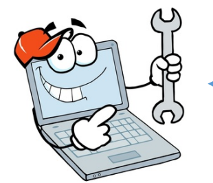
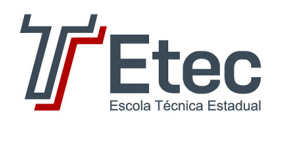

NOVOTEC MINAS
Curso Técnico em Desenvolvimento de Sistemas

- Técnico em Desenvolvimento de Sistemas
-
O técnico em Desenvolvimento de Sistemas desenvolve e opera sistemas, aplicações e interface gráfica.
Monta estruturas de banco de dados e codifica programas. Projeta, implanta e realiza manutenção de sistemas e aplicações.
Seleciona recursos de trabalho, linguagens de programação, ferramentas e metodologias para o desenvolvimento de sistemas.
Mercado de trabalho-
Instituições públicas, privadas e do terceiro setor que demandem sistemas computacionais, especialmente envolvendo programação de computadores.
O cursio é dividido em três(3)anos, a cada ano concluído o aluno recebe a seguinte certificação correspondente:
- AUXILIAR DE INFORMÁTICA
- AUXILIAR EM PROGRAMAÇÃO DE COMPUTADORES
- TÉCNICO EM INFORMÁTICA
Ao concluir o curso, o TÉCNICO EM INFORMÁTICA deverá ter construído as seguintes competências gerais:
- interpretar e desenvolver algoritmos e fluxogramas
- distinguir e avaliar linguagens de programação
- executar análise e codificar programas de aplicação a partir da avaliação das necessidades
do usuário, propondo soluções
- construir modelos, utilizando técnicas e linguagens para banco de dados
- verificar o funcionamento dos equipamentos, softwares e sistemas operacionais
- identificar oportunidades e tendências no mundo digital
- contextualizar e elaborar textos técnicos aplicados à área de Informática de acordo com normas e convenções específicas
- utilizar termos técnicos de informática na língua portuguesa e na inglesa
...:Disciplinas:...
- Lógica de programação
- Instalação e Manutenção de Computadores
- Operação de Software Aplicativo
- Técnologias e Linguagens para Banco de Dados I e II
- Linguagem de Programação Orientada a Objetos
- Gestão de Sistemas Operacionais
- Análise de Sistemas
- Empreendorismo e Inovação
- Desenvolvimento de Software
- Programação de Computadores
- Tecnologias para Mobilidade
- Redes de Comunicação de Dados
- Planejamento e Desenvolvimento do Trabalho de Conclusão de Curso(TCC) em Informática
Não perca tempo...vem pro Minas!!!
